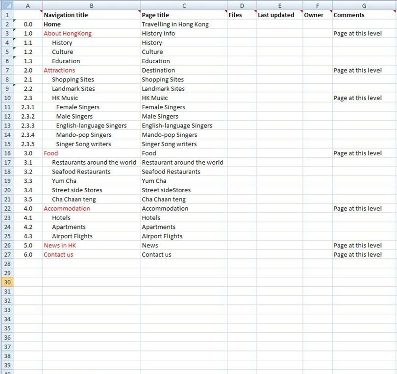
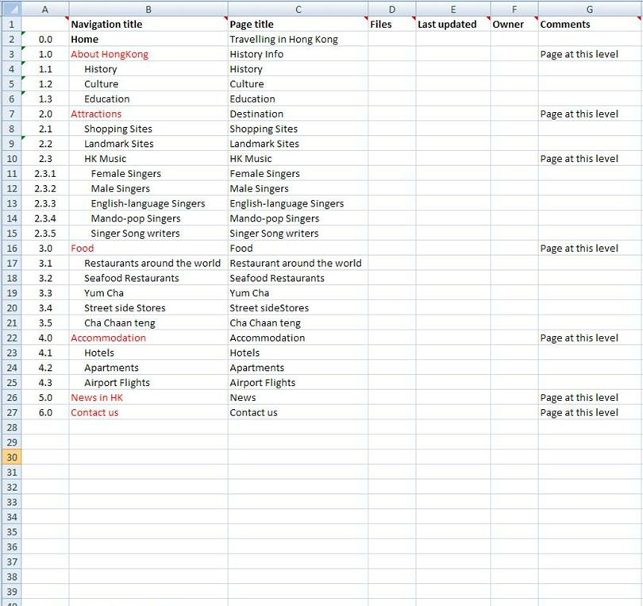
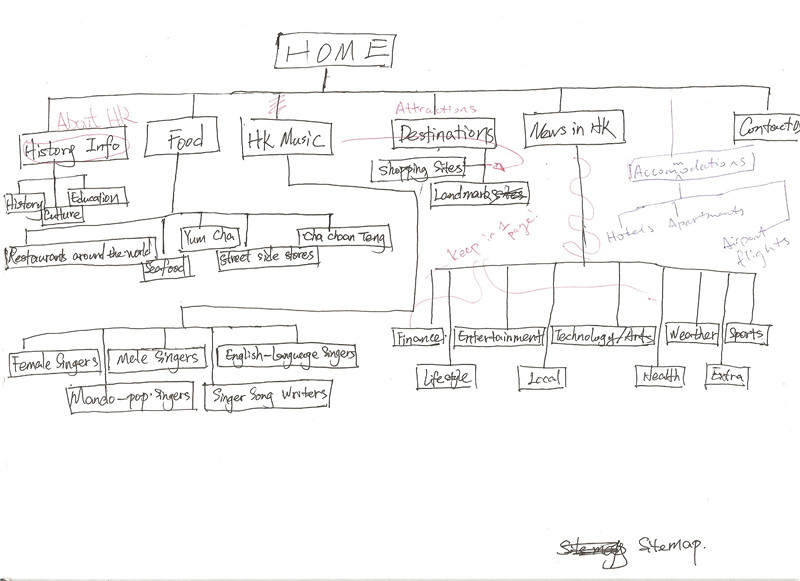
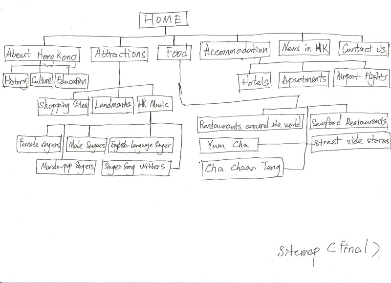
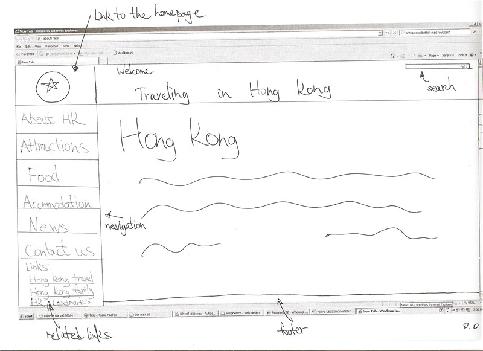
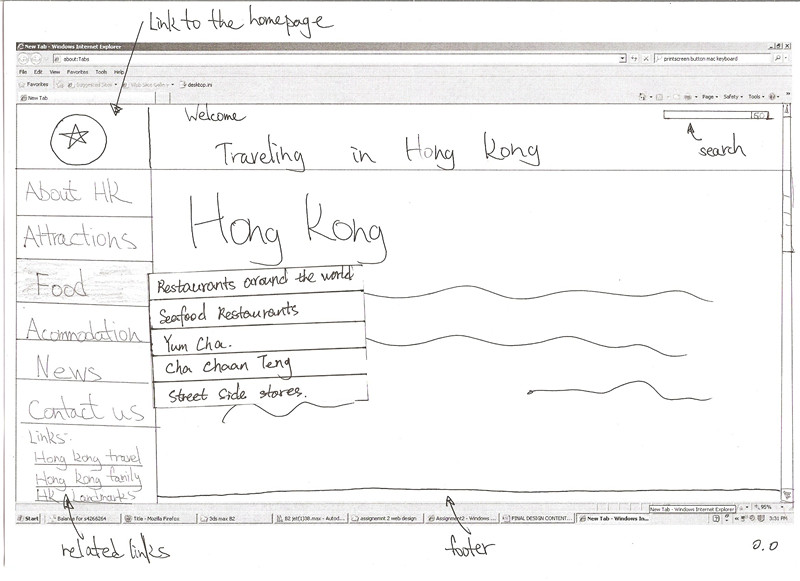
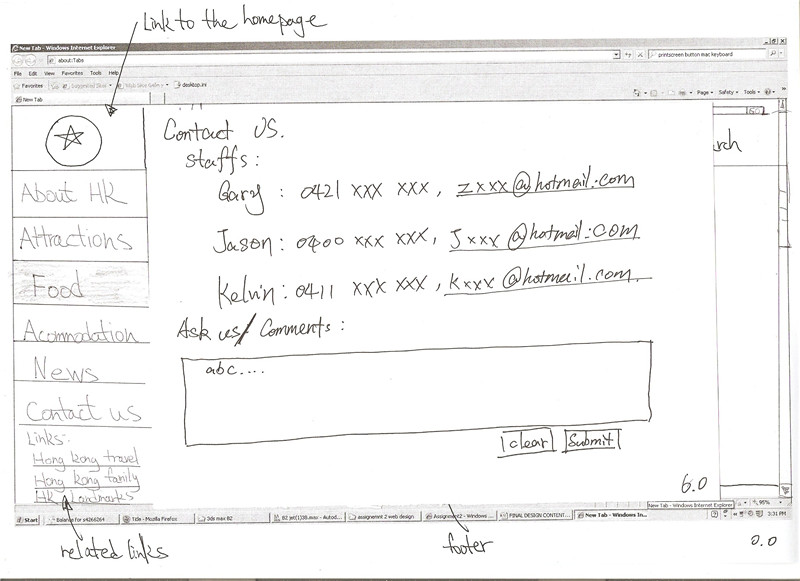

The final proposed prototypes were produced after the evaluation process. Before the final prototypes were made, the content inventory and the sitemap of the website were also improved, for instance: in the content inventory, there were originally six main categories from 1.0 to 6.0. We then changed "history info" into "About Hong Kong" for the users to easily access the information of culture, history and education etc. Moreover, we created a new category named "Attractions", which combined the "HK music" and "Destinations" together. This allowed users to find out information on Hong Kong music under the "Attractions" content. The reason we modified this was because we wanted to design a more succinct navigation plan for the website. Moreover, a content inventory of "Accommodations" of Hong Kong was added for its significance in respect to travelling. Thus, created second level pages for the accommodation, i.e. hotels, apartments and airport flights.
The last issue was improved on the "News" category. We planned to display all the various news into one page instead of creating a large amount of sub-level pages. In the end, a newly improved sitemap was generated based on around the content inventory.
Variations of content inventory and sitemap:
Variation of Content Inventory
 

{kind=link}
Variations of Sitemap
{kind=link}
 
{kind=link}
As a result of that, we were about to create our final paper prototypes. As shown from the images, we organised the website as a succinct homepage: a logo linking to homepage and a greeting is to be put on the header with an appropriate background image. A search input box is to be set on the top right hand side, whereas the left side of the website will be the navigation bar linking to the information in relevance to travelling. Located below are related links/websites displayed for further information. Furthermore, when the categories are clicked, a new page of related information is to be displayed while a small sub-level navigation table will appear when highlighted over. This will occur for all the other categories as well, i.e. mouse on the ?°„Food?°¿ table will come up with "Restaurants around the world", "Yum Cha", "Seafood restaurants" and etc..
Eventually, we repeated our scenarios running through a few more users and further evaluated our design to ensure a final proposed design. Pictures of final paper prototypes are shown:
Final prototypes
{kind=link}
  
{kind=link}
{kind=link}